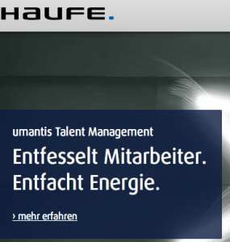

Bewerbermanagement professionalisieren
Die Suche nach qualifizierten Fachkräften ist für jedes Unternehmen eine wichtige Aufgabe. Fachlich sind die meisten Unternehmen dem dieser Aufgabe gewachsen, aber organisatorisch ist die Neubesetzung einer Stelle für viele eine große Herausforderung. Den Bewerbungs- und Auswahlprozess erleben viele Unternehmen als sehr zeitraubend und belastend. Dabei ist ja inzwischen ein richtiger „war for talents“ entbrannt, bei dem sich kein Unternehmen leisten kann ins Hintertreffen zu geraten
Stellenanzeigen müssen ausgeschrieben werden, eingehende Bewerbungen verarbeitet, Absagen versandt, Kandidaten eingeladen und weiter selektiert werden. Immer wieder müssen Bewerber lange auf Antwort warten, ganz gleich ob Absage oder Einladung. Das ist für die Bewerber sehr unangenehm, wirft aber auch kein gutes Licht auf die Unternehmen. In vielen kleineren aber auch mittleren Unternehmen gibt es kein vernünftiges Werkzeug, um Bewerbungen und den Prozess dazu zu managen. Oft ist nicht einmal ein Prozess definiert.
Perfekte zeitgemäße Büroorganisation hilft. Denn durchdachte und schlanke Prozesse in den zuständigen Abteilungen sowie die entsprechende Software können eine enorme Erleichterung schaffen. Standardisierung und Automatisierung sind die „Zauberwörter“. Natürlich muss man gut abwägen, wie viel Automatismen man den Bewerbern zumuten möchte.
Eine erste Vereinfachung und Professionalisierung kann schon eine Exceltabelle und eine gute Ordnerstruktur auf dem Laufwerk bringen. Das ist aber wirklich nur die Einstiegslösung. Wer 1000 Bewerbungsunterlagen und mehr pro Jahr bekommt, sollte schon zu einer professionelleren Lösung greifen. Und, Sie ahnen es, auch dafür gibt es geeignete Softwarelösungen.
Eine Software für das Bewerbermanagement erleichtert den gesamten Prozess des Bewerbermanagements und kann bis zur nahezu automatisierten Bearbeitung der Unterlagen reichen. Ich bin kein Profi für Bewerbermanagementsoftware, habe mir aber verschiedene Programme angesehen. Eine Lösung (Umantis von Haufe) die ich neulich beim Kunden vor Ort ansehen konnte und mit der wir gemeinsam gearbeitet haben, hat mir besonders gefallen.
Was ist eigentlich Bewerbermanagement?

Der Begriff Bewerbermanagement umfasst alle Arbeitsschritte im Umgang mit vakanten Stellen und Bewerbern. Dazu gehört u.a.- das Erfassen eingehender Anschreiben
- die Weitergabe dieser an die jeweiligen Ansprechpartner
- die Auswertung der Unterlagen hinsichtlich der fachlichen Kompetenzen
- die Auswahl von Kandidaten für Vorstellungsgespräche
- Einstellung oder die Absage.
Ein zeitaufwendiger Prozess.
Folgen später Reaktion auf Bewerbungen
Aber wie schon kurz erwähnt, eine späte Reaktion des Unternehmens oder im schlimmsten Falle auch gar keine ist nicht nur unangenehm für den Bewerber, denn die meisten Stellensuchenden erzählen Freunden und Bekannten von ihren Erfahrungen beim Bewerbungsprozess.
Wenn Firmen hier auffallen, etwa indem erst nach langer Latenzzeit eine Reaktion auf die Bewerbung erfolgt oder keine Absagen versandt werden, ist dies eine denkbar schlechte Eigenwerbung. Das vermittelt eine geringe Wertschätzung gegenüber Bewerbern und damit potentiellen Mitarbeitern. Über Social Media-Kanäle wie Facebook, Twitter oder die Portale Xing, Kununu oder LinkedIn erreichen diese Erfahrungen auch schnell eine breite Öffentlichkeit und das in den Portalen, wo die Firmen eigentlich auf positivste Darstellung bedacht sein müssten.
Machen Sie es besser, denn:
Wer die besten Mitarbeiter für sich gewinnen will, muss Bewerber als wertvolle Ressource erkennen und entsprechend wertschätzend behandeln.
Dabei hilft die Nutzung einer geeigneten Software.
Von der vakanten Stelle zur Stellenanzeige
Am Anfang steht der Wunsch, weitere Mitarbeiter einzustellen. Welche Aufgaben der neue Mitarbeiter zu erledigen hat, welchen Anforderungen gestellt werden und welche Soft Skills vorhanden sein müssen, wird in einem Anforderungsprofil zusammengefasst. Dieses ist Basis der Stellenanzeigen und Ausschreibungen. Die passende Software erleichtert dabei die Arbeit:
- bereichsbezogene Stellenanzeigen werden anhand von Textbausteinen generiert
- Schaltung der Anzeigen auf der Firmenhomepage und in Jobportalen kann durch die Anbindung der Seiten an die Bewerbermanagement-Software schneller erfolgen
- Bewerbungsfristen können aus der Software heraus verlängert oder eingeschränkt werden
**Bewerbungen online forcieren
**
Es ist für alle am Bewerbungsprozess Beteiligten zeitsparend, wenn die eingehenden Bewerbungen nicht schriftlich erfolgen, sondern über ein Webformular abgewickelt werden. Die Bewerber erhalten bei den Ausschreibungen in webbasierten Jobbörsen den entsprechenden Link, der auf die Homepages des Unternehmens und das dortige Bewerbungsformular hinweist.
- die Bewerber können alle relevanten Adressdaten online eingeben
- die Stationen im Lebenslauf werden online hinterlegt, ebenso wie Ausbildungsabschlüsse und Qualifikationen
- analog können Dateien hochgeladen werden, wie Abschlusszeugnisse und Diplome
- Parsing-Tools erleichtern die Eingabe – diese scannen einen hochgeladenen Lebenslauf durch Texterkennungsapps und laden die Informationen in das Webformular, sodass dieses nur noch vom Bewerber auf etwaige Fehler kontrolliert werden muss.
- alle Anforderungen der Stellenausschreibung können hier standardisiert abgefragt werden; auch der Grad der Erfahrungen (z.B. Grundkenntnisse vs. hohe Expertise) in einzelnen geforderten Kompetenzen wird erfasst.
- webbasierte Bewerbung wird für alle Bereiche des Unternehmens angewandt; mit einer Drop-Down-Liste gibt der Bewerber an, auf welche Stelle er sich bewirbt. Diese Angabe wird als Filter verwendet, um die Unterlagen der richtigen Abteilung zukommen zu lassen
Ein Matching der Anforderungen
Die Recruitement-Software führt ein Matching durch. Die abgefragten Anforderungen (Abschlüsse, Sprachkenntnisse etc.) werden mit den vom Bewerber eingegebenen Qualifikationen abgeglichen. Es entsteht eine Rankingliste der eingegangenen Bewerbungen. Für jeden Bewerber kann eine Einzelbewertung aufgerufen und manuell verändert werden. Auf einen Blick wird so ersichtlich, welcher Kandidat den Konditionen der vakanten Stelle am ehesten entspricht.
Schnittstelle zu bestehenden Kommunikationssystemen
Alle online eingegebenen Daten werden den entsprechenden Fachabteilungen des Unternehmens zur Verfügung gestellt. Es erfolgt eine Unterteilung in neu eingegangene, sich in Bearbeitung befindliche und bereits fertig bearbeitete Bewerbungen. Entscheidungsträger können gleichzeitig auf diese Informationen zugreifen. Zusätzliche Filterfunktionen erleichtern die Bearbeitung:
- Bewerber der gesuchten Berufsgruppe können mit allen Kontaktdaten und wesentlichen Informationen zum Lebenslauf in der Software aufgerufen werden
- der vollständige Lebenslauf ist ebenfalls einsehbar
- der Verlauf der bisherigen Kontakte (Anrufe, erhaltene Eingangsbestätigung) ist im Kontakt hinterlegt
- eine Wiedervorlage erleichtert es, vereinbarte Termine einzuhalten und interessante Bewerber nicht aus den Augen zu verlieren
- aus der Software heraus können Briefe und Mails an den Kontakt gesendet werden, hierfür sind Vorlagen (z.B. Einladung zum Vorstellungsgespräch oder Absage) hinterlegt
- durch eine Koppelung der Telefonanlage mit den Kontaktdaten in der Software kann sogar aus dem Programm heraus angerufen werden – praktisch insbesondere, wenn Headsets zum Telefonieren verwendet werden
- entsteht aus einem Kontakt zum Bewerber ein Vorstellungsgespräch, können dessen wesentliche Inhalte ebenfalls hinterlegt werden
- erfolgt eine Einstellung, werden die Daten automatisch in die Stammdatenakte des neuen Mitarbeiters übertragen.
Fazit: Eine Bewerbermanagementsoftware wie z.B. Umantis bringt zahlreiche Erleichterungen für den Einstellungsprozess. Alle Informationen werden schneller und für alle Beteiligten einfacher verarbeitet. Das Unternehmen reagiert schneller auf die Bewerbung, der Interessent erhält zeitnah eine erste Rückmeldung und durch den Verzicht auf schriftliche Bewerbungen müssen keine Unterlagen zurückgeschickt werden. Die Anbindung der Software an bereits vorhandene Informationsverarbeitungssysteme erlaubt es, relevante Daten zu übertragen und in Formulare einzubinden. Das alles spart enorm viel Zeit und Geld.
Weitere Artikel

Digitale Tools für Zusammenarbeit im Office
E-Mail, Digitale Ablage und eine Branchensoftware sind schon lange nicht mehr genug für effiziente Zusammenarbeit. Doch bevor Sie sich in einem Dschungel an digitalen Werkzeugen verlieren, sollten Sie sich über die Systematik …

Kollaboration im Office mit Kanbanize
Ein Tool, was mich für die digitale Kollaboration im Office begeistert ist Kanbanize. Dort kann man wirklich sehr fortgeschritten und smart zusammenarbeiten. Mit seinen verschiedenen Perspektiven auf den Flow im Office, der …